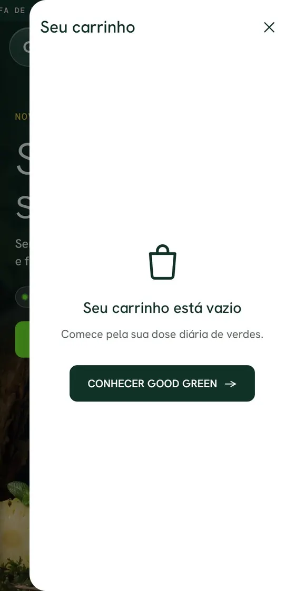
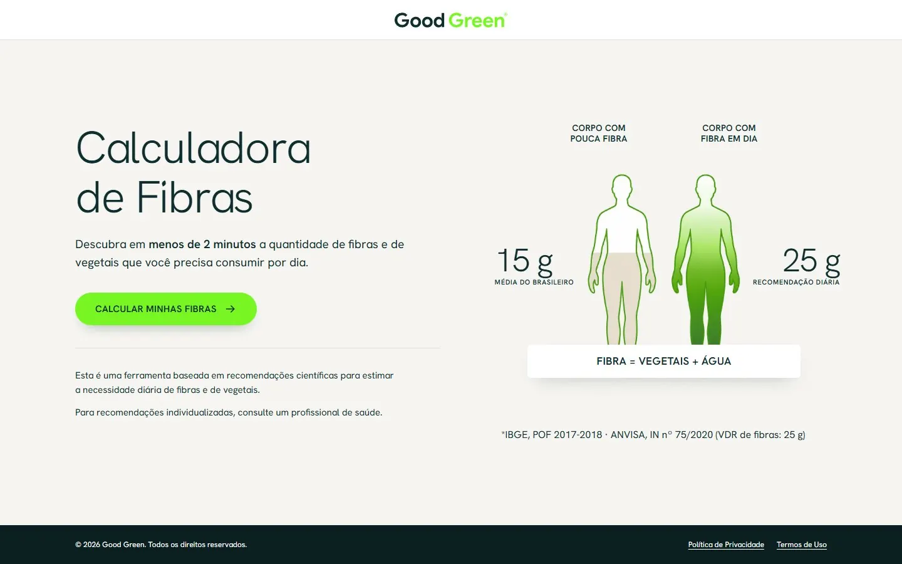
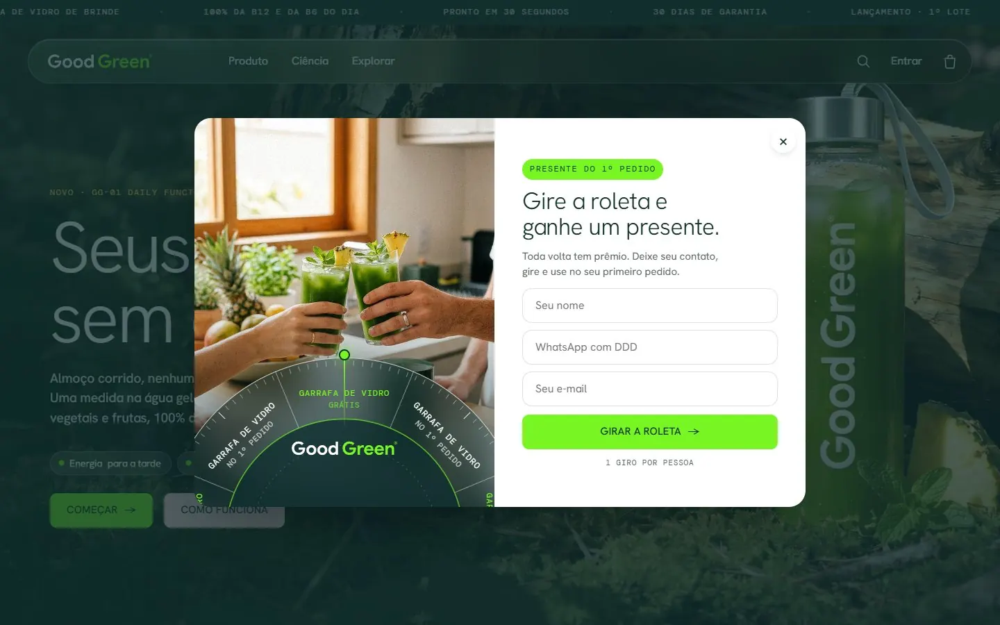
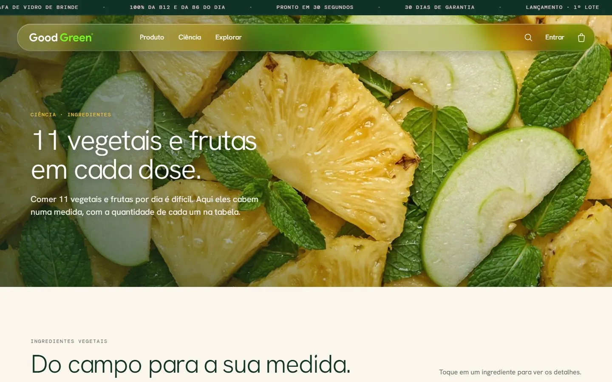

Good
Green
Site completo e jornada de lançamento de uma marca nova de bebida verde em pó.
Uma categoria nova para o Brasil.
Good Green é um suplemento em pó que vira bebida verde: uma medida em 300 ml de água. A categoria já é grande lá fora e pouca gente aqui conhece.
O site precisava fazer duas coisas ao mesmo tempo: explicar o produto para quem nunca ouviu falar dele e parecer gostoso antes de parecer saudável.
A bebida tem que parecer gostosa antes de parecer saudável. O copo gelado vem antes da tabela.
O quiz mostra só as dores que a pessoa marcou, a causa e um dado com fonte. A Good Green entra depois, como solução.
Cada tela nasce no Figma, em desktop e celular, e só depois vira página. Site e Figma andam iguais.
O site
Home em desktop e no celular. As imagens rolam junto com a página.

O quiz monta o diagnóstico.
São quatro perguntas seguidas, sem tela educativa no meio. O resultado mostra só as dores marcadas, com a causa de cada uma, e apresenta o produto no fim, como solução.
O pop-up da roleta e o carrinho seguem a mesma linguagem: vidro, foto real e pouco texto.




A página de produto
A mesma estrutura da página de lançamento, sem a campanha.

A jornada de lançamento
Antes de a loja abrir, a marca precisa de lista: captação, calculadora de fibras e páginas de apoio.




